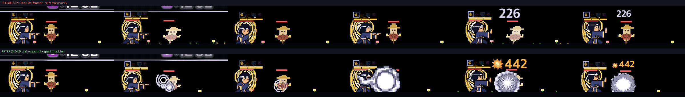
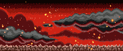

3차 궁극기 텍스처 생성 계획
패왕권 · 천풍각 · 기신 강림 — 승인 대기 · 스펙
docs/specs/boxer-class.md "3차 궁극기 텍스처 생성 계획"
요지
- 궁극기 전용 그림 9장(배경 3 · 거대 형상 3 · 막타 3)을 만든다. 지금(0.24.2)은 2차 그림을 빌려 쓰는 임시 상태다.
- 순서: ComfyUI 시안(무료, 장당 24~32장) → 사용자가 장마다 하나 고름 → 고른 것만 PixelLab으로 도트화·프레임.
- PixelLab 상한 30회, 예상 15~18회. 지금 잔량 1,163회 · 바닥 300회.
- ComfyUI 는 Windows PC 에만 있다 → 시안 단계는 그 PC 세션에서 돌린다.
지금 상태 — 기신 강림 전후 (0.24.2 임시 메꿈)

위: 0.24.1 — 2.7초 동안 손바닥 밀기 동작만 반복. 아래: 0.24.2 — 2차 기탄·폭발을 빌려 연타마다 기탄, 막타는 2배 기탄. 하늘 배경·기의 거인은 아직 없다 (이 계획의 대상).
그림 결 참고 — 이미 쓰는 시트

시트는 밝기 단계로 바뀐 뒤 직업색 램프로 칠해진다. 그래서 전부 "검은 바탕 위 흰~회색 빛"으로 뽑는다.
9장 목록 · 호출 상한
체크박스를 끄면 그 재시도를 빼고 합계를 다시 센다. 기본은 재시도까지 다 쓴 최악의 경우.
| 번호 | 그림 · ComfyUI 프롬프트 초안 | 도트 × 프레임 | 시안 | 키 | 키 재시도 | 프레임 | 프레임 재시도 | 장 상한 |
|---|
선택 추가안
PixelLab 합계: 0회 (재시도 없으면 0회)
빨간 선 = 이번 작업 상한 30회 · 계정 잔량 1,163 → 끝나도 0회 남음 (바닥 300)
단계별 절차
- ComfyUI 시안 (Windows PC, 무료): Z-Image Turbo + 픽셀 LoRA,
dev/comfy/trial.py cands→post.py. 장당 24~32장을 이 페이지에 깔아 둔다. - 사용자 고르기: 장마다 하나. 배경 3장은 시안을 바로 쓸 수 있는지도 같이 본다(되면 PixelLab 0회).
- PixelLab 키:
image_to_pixelartfaithful, strength 150~250, 목표 도트 크기로. - PixelLab 프레임:
animate_image— 키를 첫 프레임으로, 막타 6프레임은 "흩어져 사라짐"으로. - 3장마다 중간 보고 (사용량 · 전후 캡처). 호출마다
dev/boxer/vfx/usage.md에 usage·잔량 전후 기록. 한 호출에 잔량이 5 넘게 줄면 멈추고 보고. - 코드 (무료):
src/ult/kingFist.js · heavenWind.js · qiGodDescent.js— 각성 동안 배경, 시전자 뒤 거대 형상이 떠올라 막타에 내리침. ★ 단계 차이는 잔상·분신(캐릭터 시트) · 주먹 비(XF02 작은 사본) · 거대 회오리(XE09/XE08) · 팔 여럿(XF06 겹치기).
실패 시 수리법 (돈 안 드는 쪽 먼저)
| 무엇이 | 1차 | 2차 |
|---|---|---|
| 시안이 다 별로 | 프롬프트 바꿔 ComfyUI 더 뽑기 (무료) | 48장 넘게 안 되면 그 장만 create_image_pixen 키 1회 (장 상한 안) |
| 도트화가 뭉갬 | strength 바꿔 재시도 1회 | pixelart_workbench 손 정리 (무료) |
| 프레임이 녹거나 붙음 | 끝 프레임 고정해 재시도 1회 | 키에서 코드로 프레임 (0.7배→원본→조각 밀기, ComfyUI img2img 0.45) 또는 vfx_workbench (무료) |
| 상한 30 도달 | 남은 장은 0.24.2 임시 메꿈 그대로 두고 보고 | |
수용 기준
- ☐ 9장이
src/vfx/에 있고xmeta.js에 등록된다. - ☐ 시험장에서 세 궁극기 × ★0~3 이 예외 없이 돈다.
- ☐ 같은 계열 3차 궁극기 나란히 전후 비교에서 동작만 반복하는 구간이 없다.
- ☐ 1× 크기에서 계단 잡음·외톨이 점이 눈에 안 띈다.
- ☐ PixelLab 사용 합 30회 이하.
결정해 주실 것
상한 30회 승인?선택 추가안(+12) 넣을지배경 1프레임으로 줄이는 것 (스펙 ×2 → ×1)